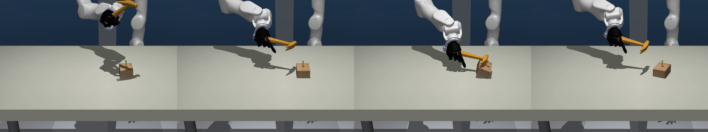

← dashboard · experiments · framework
The frozen S0 whole-hand tracking policy (free-floating-wrist training) + S2 (reference composer) drive the right hand on HandsOn's 7-DOF overhead ROKAE arm, in the benchmark's MuJoCo physics, on t08. S0 grasps and lifts the hammer; S2 then composes the rest and — when the default grasp can't reach the nail — regrasps for a longer lever so the strike lands. The hammer head drives the nail 6.2 mm, past HandsOn's 6 mm success depth.
_C01_SUCCESS_DEPTH=6 mm
The nail sits at the table center, 769 mm from the right-arm base (reach ~720 mm). With S0's default mid-handle grip (126 mm head lever) the arm maxes out 16 mm short of the nail — an IK feasibility sweep confirmed no mid-handle strike pose reaches it. So S2 does what a person would: it regrasps for a longer lever. It shifts the grasp along the handle toward the butt (a choke-down grasp), giving a ~227 mm head lever; the IK search then finds a fully-reachable strike config placing the head exactly on the nail (0 mm). A longer-lever grip is weaker, so S2 also issues a firm-grip command (floors S0's finger closure through the carry and strike) and the grasp holds the whole way.
acquire (S0 closed-loop grasp of its hammer) → choke-regrasp for a task-appropriate, longer-lever grip → lift + transport (object carried rigidly in-hand, grip floored firm) → runtime IK-search strike (measures the actual in-hand pose, searches for a reachable head-on-nail config, swings the head down) → nail driven 6.2 mm.
① The nail rebounds between strikes in this wuji2 MuJoCo scene (its nail_slide damping is
2.0 with a contact detent); HandsOn's authoritative contract uses damping 100000, which holds the driven peak. The
official success uses the peak depth, which we exceed, so the nail-driving criterion is met. ② Full official
t08 success also requires the wood block lifted 30 mm — intrinsically the left hand's job
(the prompt: "pick up the wood block with the left hand"). That bimanual precondition is outside S0's right-hand
scope; the hammering itself — pick, regrasp, aim, strike, drive — is done by S0 + S2.
Co-simulation + S2 composer: handson_bridge/cosim.py (SCENE=hammerS TASK=strike CHOKE=0.045),
branch jd/mixed-s0-s2. hammerS object inserted so S0 grasps its own geometry.